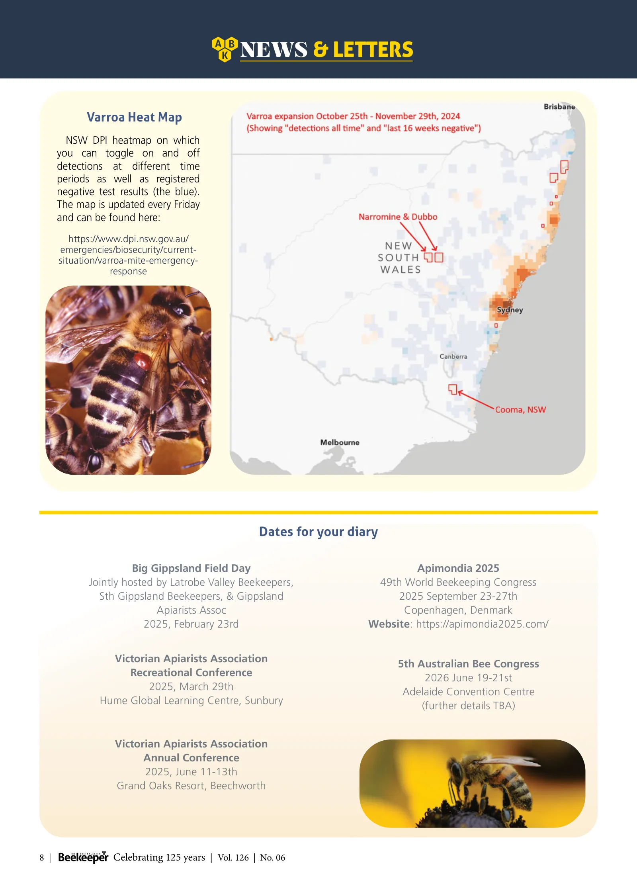

NEWS & LETTERS
Photo by
Marcia Cripps on Unsplash
NSW DPI heatmap on which
you can toggle on and off
detections at different time
periods as well as registered
negative test results (the blue).
The map is updated every Friday
and can be found here:
https://www.dpi.nsw.gov.au/
emergencies/biosecurity/current-
situation/varroa-mite-emergency-
response
Varroa Heat Map
Dates for your diary
Apimondia 2025
49th World Beekeeping Congress
2025 September 23-27th
Copenhagen, Denmark
Website: https://apimondia2025.com/
Big Gippsland Field Day
Jointly hosted by Latrobe Valley Beekeepers,
Sth Gippsland Beekeepers, & Gippsland
Apiarists Assoc
2025, February 23rd
Victorian Apiarists Association
Recreational Conference
2025, March 29th
Hume Global Learning Centre, Sunbury
Victorian Apiarists Association
Annual Conference
2025, June 11-13th
Grand Oaks Resort, Beechworth
5th Australian Bee Congress
2026 June 19-21st
Adelaide Convention Centre
(further details TBA)
8 |
Celebrating 125 years | Vol. 126 | No. 06